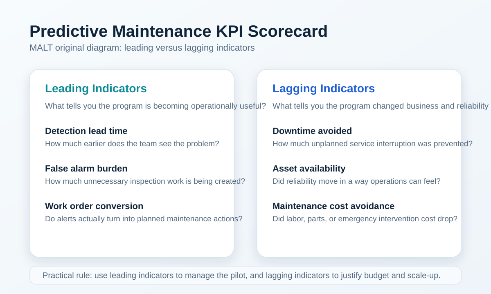

예지보전 프로젝트는 기술보다 성과 측정 방식 때문에 실패하는 경우가 많습니다. 정확도와 F1 score만으로는 운영팀이 원하는 답을 주기 어렵기 때문입니다. 이 가이드는 predictive maintenance KPI와 ROI를 실제 유지보수 조직이 읽을 수 있는 언어로 정리합니다.
모델 정확도는 기술 지표이지 사업 지표가 아닙니다. 유지보수 조직이 실제로 알고 싶은 것은 경보가 얼마나 일찍 왔는지, 불필요한 작업을 얼마나 줄였는지, 계획되지 않은 다운타임을 얼마나 회피했는지입니다. 드문 고장 환경에서는 accuracy가 높아도 현장 가치가 거의 없을 수 있습니다.
특히 설비 고장이 드물고 비용 구조가 큰 산업에서는 "잘 맞췄는가"보다 "언제, 어떤 의사결정을 바꿨는가"가 더 중요합니다. 경보가 제때 와서 정비 계획을 앞당겼는지, 야간 긴급 출동을 줄였는지, 예비 부품 준비 시간을 벌어줬는지가 실제 사업 언어입니다. 그래서 KPI 문서는 데이터팀의 성능 보고서가 아니라 운영팀의 판단 지원 문서처럼 작성되어야 합니다.
예지보전 KPI는 즉시 반응 지표와 결과 지표를 분리해야 합니다. lead time, alert quality, inspection conversion은 leading indicator이고, downtime avoided, availability improvement, maintenance cost avoidance는 lagging indicator입니다. 이 구분이 있어야 초기 파일럿과 장기 ROI를 혼동하지 않습니다.

이 지표들을 함께 봐야 예지보전이 단순 탐지 실험이 아니라 실제 운영 개선 장치인지 판단할 수 있습니다.
KPI 이름만 적어두면 현장에서 해석이 제각각이 되기 쉽습니다. 그래서 각 지표 옆에는 운영 질문이 함께 붙어야 합니다. 예를 들어 lead time은 "정비팀이 실제로 움직일 수 있을 만큼 빨랐는가", false alarm burden은 "현장 피로를 감수할 만큼 가치가 있었는가", conversion rate는 "경보가 실제 점검 의사결정으로 이어졌는가"라는 질문으로 읽혀야 합니다.
이렇게 질문형으로 바꾸면 KPI 대시보드가 숫자 나열이 아니라 행동 지침이 됩니다.
예지보전 ROI는 막은 고장 1건의 비용만으로 계산하면 왜곡되기 쉽습니다. 센서 설치, 데이터 수집, 분석 운영, 작업자 교육, false positive 대응 비용을 함께 봐야 합니다. 초기 파일럿에서는 full ROI보다 `decision-quality improvement`와 `avoidable event reduction`을 먼저 추적하는 편이 현실적입니다.
또한 ROI는 단일 숫자로 고정하기보다, 보수적 시나리오와 기준 시나리오를 나눠 보는 편이 좋습니다. 고장 회피 비용이 불확실할수록 기대 절감액을 과감하게 잡기보다, 실제 경보 처리 비용과 운영 투입을 먼저 명시하는 쪽이 의사결정자 신뢰를 얻습니다.
현장에서는 복잡한 재무 모델보다 "무엇을 더하고 무엇을 빼는가"가 명확한 프레임이 먼저 필요합니다. 예지보전 ROI는 대체로 회피 편익에서 운영 비용을 뺀 뒤, 투자 규모 대비 비율로 보는 구조입니다. 여기서 회피 편익은 단순 수리비 절감만이 아니라 다운타임, 긴급 출동, 부품 물류 지연, 서비스 신뢰도 손실까지 포함할 수 있습니다.
핵심은 계산식보다 가정의 투명성입니다. ROI 숫자가 조금 낮아 보여도 가정이 명확하면 확산 의사결정에 더 도움이 됩니다.
철도와 회전체 설비에서는 안전과 운영 지연 비용이 함께 걸려 있습니다. 따라서 KPI scorecard도 기술팀, 정비팀, 운영팀이 같이 읽을 수 있어야 합니다. corridor별 lead time, depot별 false alarm burden, 자산군별 recurrence rate처럼 운영 구조에 맞는 차원을 쓰는 편이 좋습니다.
많은 팀이 파일럿 2~3개월 성과를 곧바로 전사 ROI 논리로 연결하려다 신뢰를 잃습니다. 파일럿 단계의 목표는 완성된 수익성 증명이 아니라, 어떤 자산군에서 경보가 해석 가능하고 어떤 운영 흐름이 필요한지를 검증하는 것입니다. 반대로 확산 단계에서는 표준화, 유지 비용, 다수 현장 적용성 같은 질문이 더 중요해집니다.
즉 같은 모델이라도 파일럿 성공 기준과 확산 성공 기준은 달라야 합니다. 이 구분이 명확할수록 경영진과 현장 사이 기대치 차이가 줄어듭니다.
초기 90일 동안은 ROI를 과하게 약속하지 않는 편이 좋습니다. 먼저 baseline을 만들고, 어디에서 의미 있는 조기 경고가 나오는지 확인해야 합니다. 이후 6개월 단위에서 lead time, work order conversion, false alarm burden을 보고, 그 다음 단계에서 downtime avoided를 더 본격적으로 추정하는 편이 현실적입니다.
한 대시보드에 모든 숫자를 몰아넣으면 누구에게도 명확하지 않은 문서가 됩니다. 경영진은 분기 단위 비용 회피, 가동률, 투자 회수 기간에 관심이 크고, 현장 운영팀은 이번 주 경보 건수, 점검 전환율, 재발 자산 목록에 더 민감합니다. 같은 프로그램이라도 보는 사람에 따라 대시보드 층위를 나누는 편이 훨씬 효과적입니다.
실무적으로는 운영 대시보드와 경영 대시보드를 분리하되, 두 화면이 같은 원천 데이터에서 나오게 만드는 것이 좋습니다. 그래야 현장에서는 즉시 행동하고, 경영진은 확장 투자 판단을 안정적으로 할 수 있습니다.
모든 예지보전 프로그램이 자동으로 절감 효과를 내는 것은 아닙니다. 경보는 많지만 실제 점검 전환이 낮거나, 현장에 설명할 수 없는 모델로 반복적인 재확인 작업만 늘어나면 오히려 비용 구조가 나빠질 수 있습니다. 따라서 ROI 문서에는 성공 시나리오만이 아니라 실패 비용도 함께 들어가야 합니다.
이런 리스크를 먼저 적어두면 KPI가 더 보수적으로 보여도, 오히려 AdSense나 검색 관점에서는 더 신뢰할 수 있는 실무 문서로 인식됩니다.
이 네 가지가 빠지면 KPI 문서는 보기엔 그럴듯해도 실제 투자 판단 자료로는 약해집니다. 특히 ROI는 숫자 하나보다, 어떤 가정 위에서 계산됐는지와 어느 기간에 검증할지를 함께 적는 편이 훨씬 신뢰를 줍니다.
가장 흔한 오해는 "고장 한 번만 막아도 투자비를 회수한다"는 식의 단순 계산입니다. 실제로는 현장 인력 시간, 데이터 품질 유지, 재점검 비용, 경보 피로도 같은 요소가 같이 들어갑니다. 그래서 predictive maintenance ROI는 단기 절감액보다도, 의사결정 품질이 얼마나 안정적으로 좋아졌는가를 함께 봐야 합니다.
또 다른 오해는 모델 성능이 좋아지면 ROI도 자동으로 좋아진다고 보는 것입니다. 하지만 성능 개선이 현장 프로세스 개선으로 이어지지 않으면 수익성은 거의 움직이지 않습니다. 결국 ROI는 모델이 아니라 운영 체계의 성숙도까지 포함한 결과라는 점을 계속 상기해야 합니다.
이 가이드가 강해질수록 사이트 전체도 더 설득력 있어집니다. 다음 단계에서는 실험실 포스트에서 실제 논문 방법을 읽을 때도 lead time, false alarm burden, 현장 배치 비용 같은 KPI 관점 평가를 같이 넣는 것이 좋습니다. 그렇게 하면 MALT는 단순 요약 블로그가 아니라, 기술과 수익성을 함께 검토하는 운영형 지식 자산으로 더 명확하게 자리 잡을 수 있습니다.
이 페이지는 MALT의 AI-managed workflow가 작성한 evergreen guide이며, 내부 아카이브와 공개 글을 바탕으로 재구성했습니다.